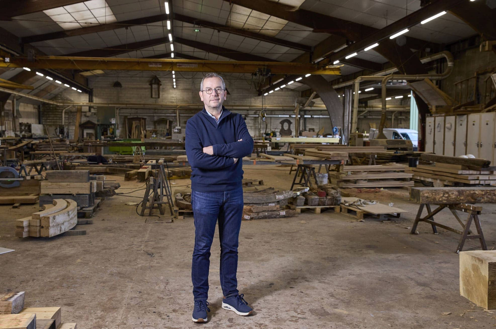
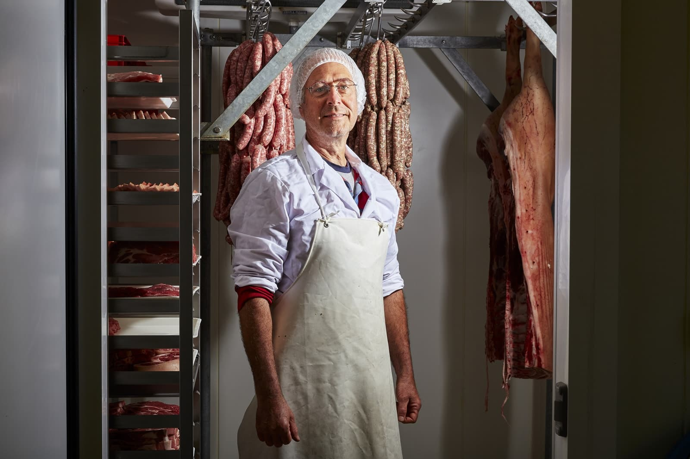
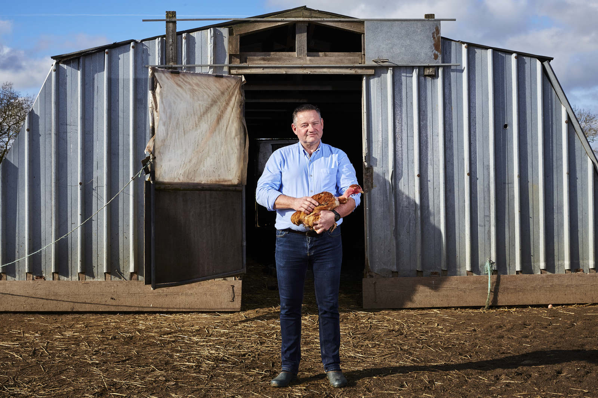

/// 3 Mar 2026 ///
Valoriser son savoir-faire artisanal par la photo en Vendée

La Vendée compte parmi les départements les plus denses en artisans de France. Menuisiers, charpentiers, éleveurs, boulangers, maraîchers, forgerons, tailleurs de pierre — chaque métier est porteur d’un savoir-faire unique, souvent transmis sur plusieurs générations.
Pourtant, la plupart de ces professionnels ne disposent d’aucune image de qualité pour se présenter en ligne, répondre à un appel d’offres ou postuler à un label. À l’heure où le premier réflexe d’un client potentiel est de chercher sur Google ou Instagram, l’absence d’image, c’est l’absence tout court.
Ce que la photo de savoir-faire apporte concrètement
Sur votre site web : des images authentiques de votre atelier, de vos gestes et de vos réalisations remplacent avantageusement les photos de stock génériques. Elles rassurent le prospect et distinguent votre entreprise de vos concurrents.
Sur les réseaux sociaux : une série de portraits documentaires — vous en train de travailler, vos outils, vos matières premières — génère un engagement bien supérieur aux simples photos de produits finis. Les gens s’attachent aux personnes avant de s’attacher aux produits.
Pour la presse et les labels : les dossiers de candidature aux labels (Entreprise du Patrimoine Vivant, Agriculture Biologique, circuits courts) exigent souvent des photos de qualité. Un reportage photo bien construit renforce considérablement la crédibilité d’un dossier.
Pour la communication institutionnelle : de nombreuses collectivités vendéennes (Conseil Départemental, communautés de communes) et organisations professionnelles (Chambre de Métiers, coopératives agricoles) cherchent régulièrement des images d’artisans locaux pour leurs publications.

Mon approche : documentaire et au plus près du geste
Je ne fais pas de la photo de catalogue. Mon approche, héritée du photojournalisme, vise à raconter un métier — la lumière qui tombe sur un établi, la main qui guide un rabot, la vapeur qui monte d’un four de boulanger à l’aube.
Je travaille le plus souvent en lumière naturelle ou avec un éclairage discret, pour ne pas altérer les conditions réelles de travail. Je m’installe dans votre espace, j’observe, et je photographie au moment où les gestes sont vrais — pas mis en scène.
Le résultat : des images qui ressemblent à votre métier et à votre manière de le pratiquer.

Comment se déroule un reportage artisan
Une demi-journée suffit généralement pour produire un portfolio exploitable :
- Arrivée tôt (la lumière du matin est souvent la plus belle en atelier)
- Phase d’observation et d’installation discrète du matériel
- Prise de vue en conditions réelles de travail
- Quelques portraits plus posés en fin de session
Je livre 40 à 60 images sélectionnées et retouchées sous une semaine, en haute résolution et en version web.
Zone d’intervention : Vendée (85), Loire-Atlantique (44), Maine-et-Loire (49), Pays de la Loire.
Découvrir mes reportages d’artisans en Vendée — Demander un devis